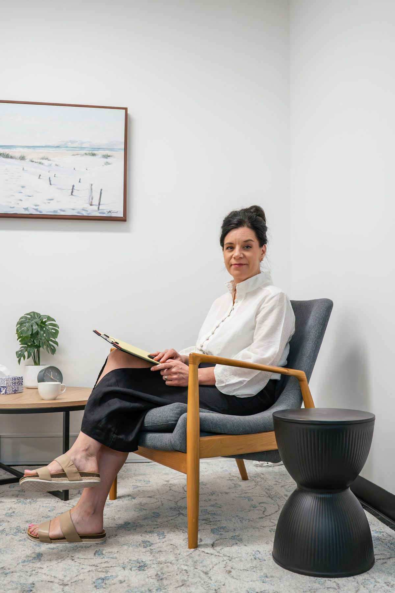
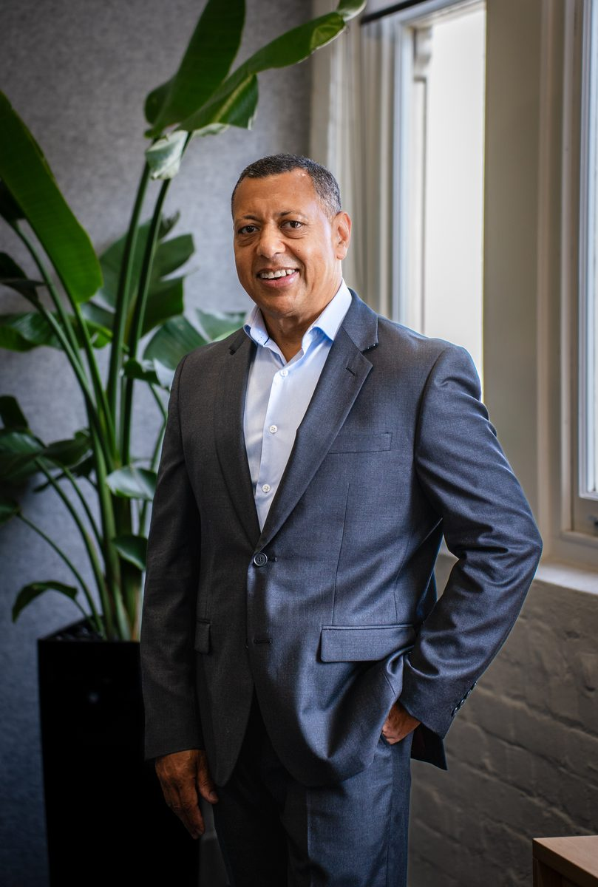
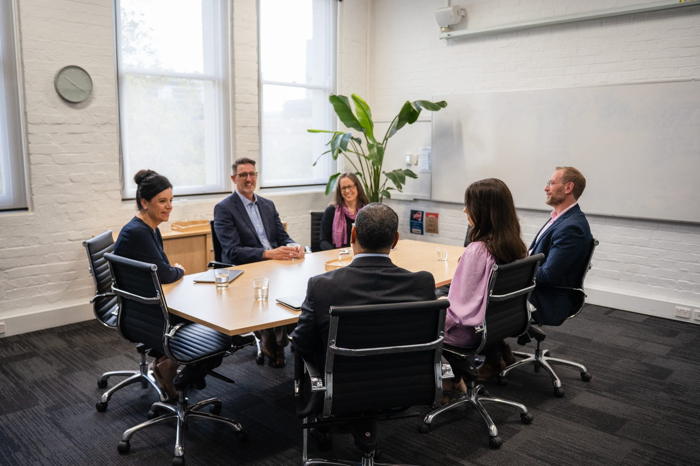
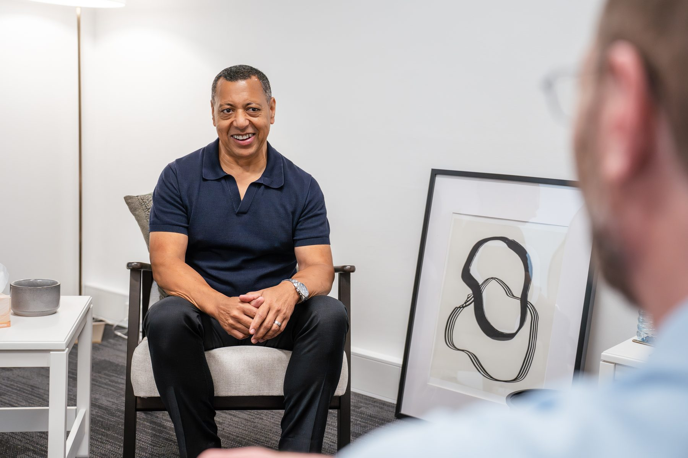
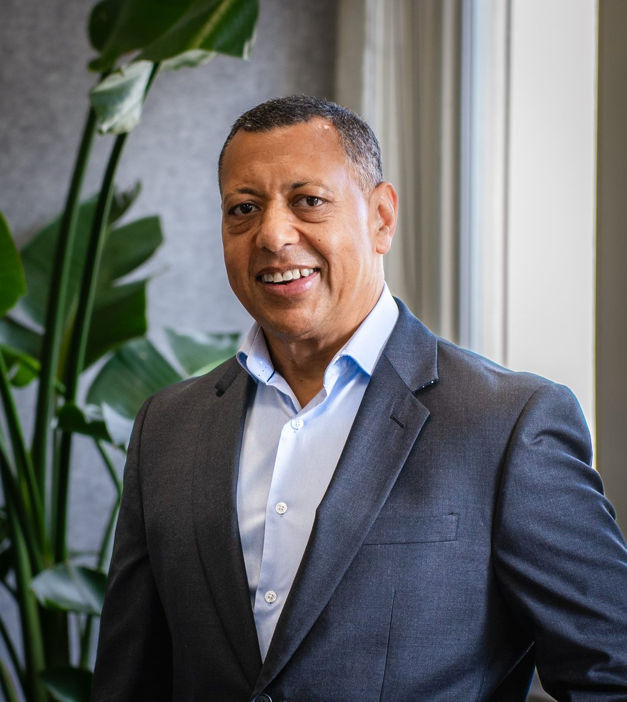
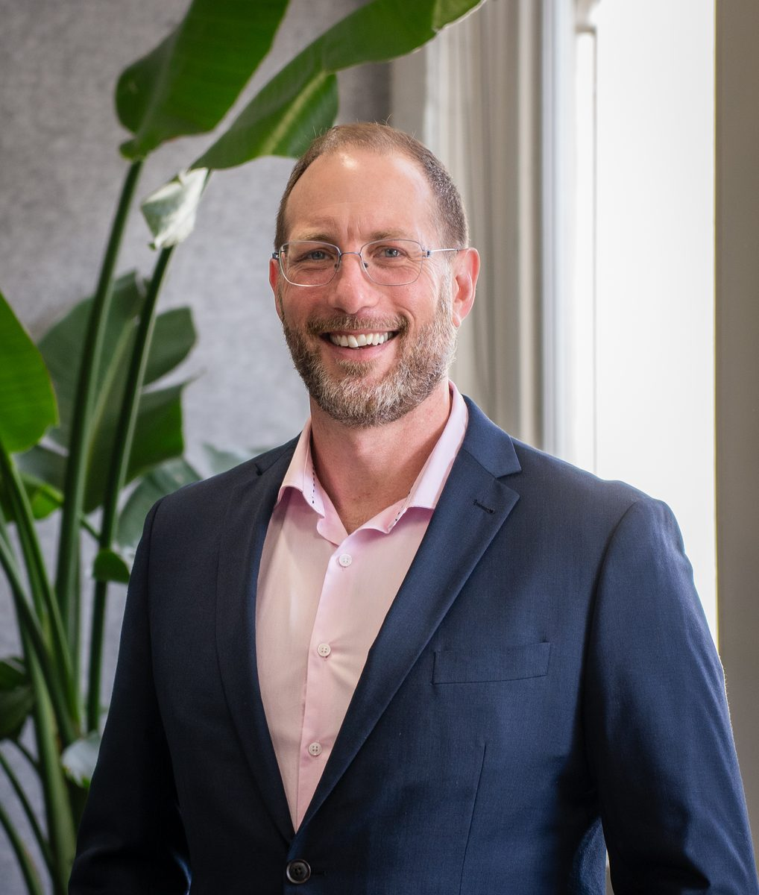
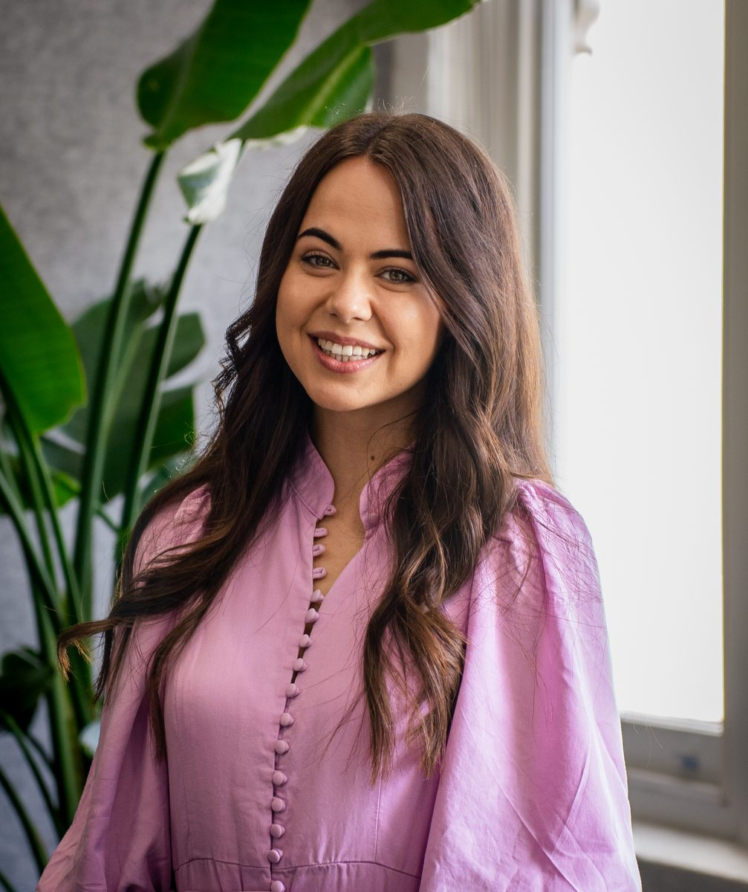
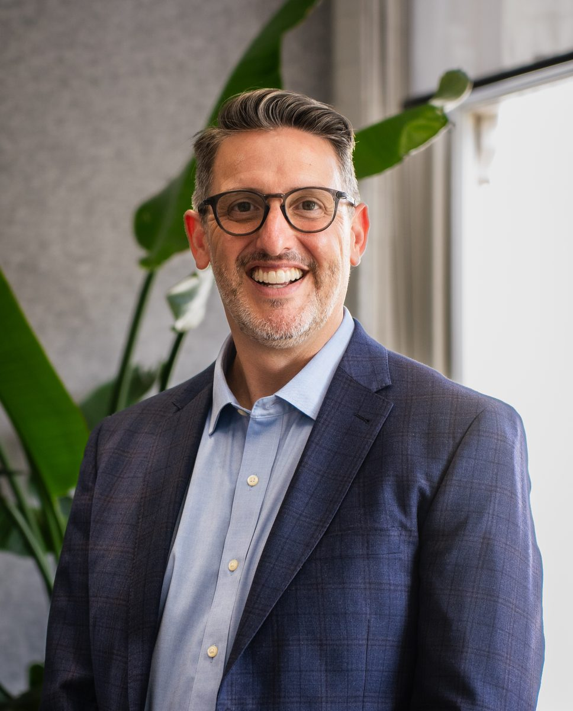
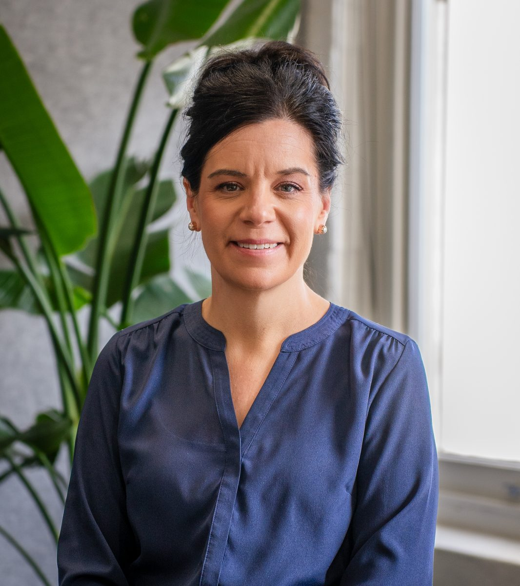

Counselling
Our services include: anxiety, stress, trauma, depression, low mood, grief and loss, child and adolescent, family and relationship.
Counselling grounded in clarity, care, and connection.
Pivot was created out of a desire to offer a space that is professional, welcoming, and deeply human - a place where people can access thoughtful counselling, meaningful support, and genuine care.
At the heart of Pivot is a team of independent practitioners who share a commitment to ethical practice, relational depth, and the belief that meaningful change is possible. Whether you are seeking counselling, supervision, or professional development, we hope you encounter a practice marked by clarity, courage, compassion, and integrity.
We are delighted to welcome you and hope this website gives you a sense of who we are, what we value, and how we may be able to support you.
Brian Gabriels
Founder & Practice Director


Our services include: anxiety, stress, trauma, depression, low mood, grief and loss, child and adolescent, family and relationship.

Our training can be tailored to a range of settings, including workplaces, schools, community organisations, and practitioner groups.

Our supervision is tailored to suit counsellors, professionals, team leaders, and those working in pastoral or organisational settings.

Brian brings a calm, thoughtful, and deeply grounded presence to his work, shaped by over 30 years in counselling, supervision, and supporting the training of counsellors in higher education.
Wendy offers a reflective and compassionate space to explore the challenges facing individuals and couples, helping clients make sense of life's complexities and move toward growth.

Tim brings a steady, down-to-earth approach to his work, shaped by years of supporting people through complex life experiences with a grounded and deeply human presence.

Hannah brings a warm, grounded approach to her work with children, adolescents, and young women, offering a safe, collaborative, and evidence-based space.

Nat is a PACFA-registered counsellor based in Adelaide, specialising in grief, loss, workplace abuse, and trauma recovery through care tailored to each client.

Esther creates a safe and compassionate space for adults and young people navigating anxiety, stress, grief, trauma, and major life transitions.
Your first session is a relaxed, confidential conversation where we get to know you and understand what you are hoping to work through. There is no pressure to share more than you are comfortable with — we move at your pace, and together we will map out a direction that feels right for you.
The number of sessions varies from person to person and depends on your goals, the nature of the concerns you bring, and your progress over time. Some people find that six to eight sessions meet their needs, while others benefit from a longer journey. We review this together regularly so you are always in the driver's seat.
Yes. Confidentiality is a cornerstone of our practice. What you share remains private, with only the narrow exceptions required by law — such as when there is an immediate risk of serious harm to you or another person. We will explain these limits clearly at the start of our work together so you can feel fully informed and safe.
Yes. We offer secure video and phone appointments for clients who prefer to meet from the comfort of their own space or who live outside the Adelaide area. Online sessions are conducted through an encrypted platform, and the quality of support you receive is the same as in person.
Pivot offers a range of professional development workshops and training programs for individuals, community groups, and organisations. Topics include mental health awareness, communication and resilience skills, and trauma-informed practice. Visit our Services or Events pages to see upcoming sessions, or get in touch to discuss a tailored program for your team.